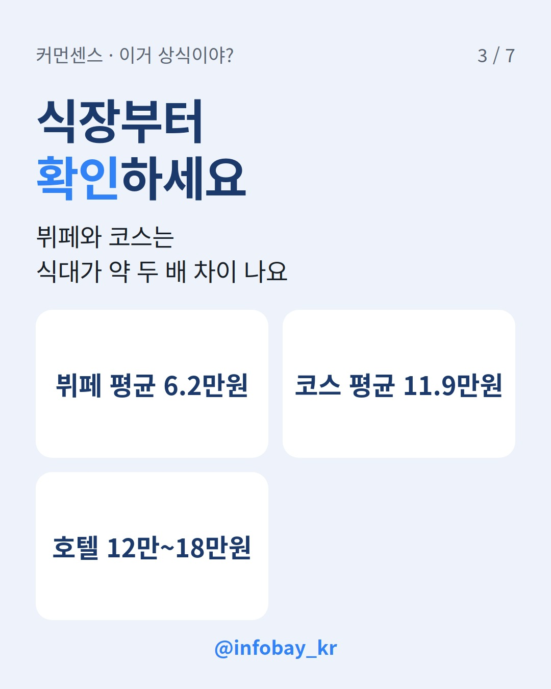
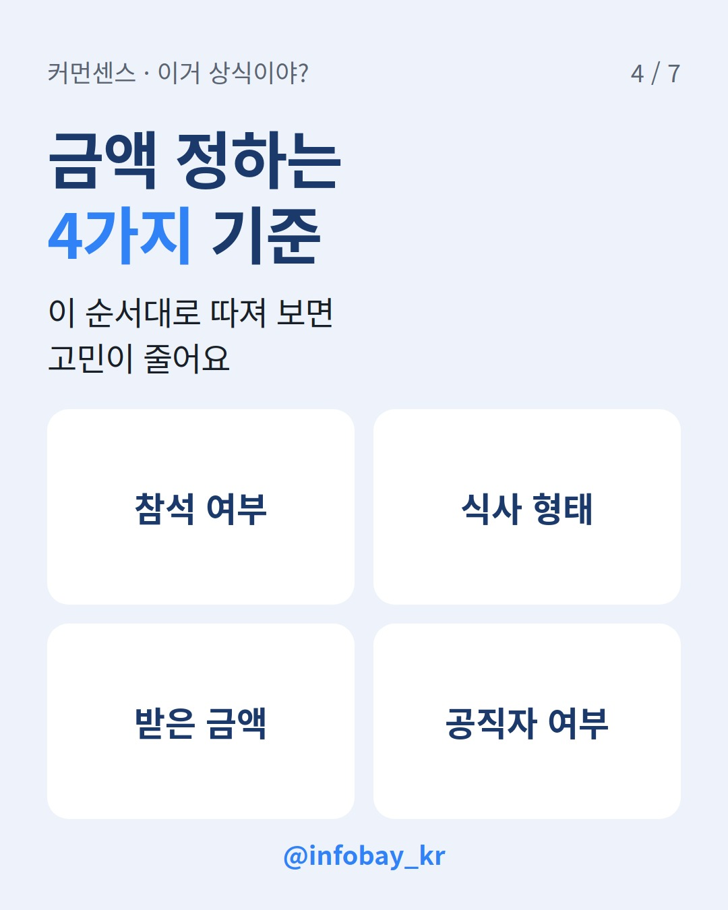

청첩장을 받고 5만원을 넣을지 10만원을 넣을지 고민 중이라면 이것부터 확인하세요. 직접 가서 밥을 먹나요? 2025년 데이터로 보면 참석해서 식사까지 하는 하객은 10만원을 내는 경우가 가장 많아요. 못 가고 봉투만 보낸다면 지금도 5만원이 가장 흔하고요. 평균 축의금은 11만7천원인데 가장 많이 오간 금액은 5만원이었어요. 이 차이를 알면 답이 보여요.
NH농협은행이 축의금 이체 데이터를 분석해 보니 2025년 평균 축의금은 11만7천원이었어요. 2023년 11만원, 2024년 11만4천원으로 해마다 올라 2년 새 약 6.9% 뛰었죠. 카카오페이 '2025 머니리포트'에서도 축의금 송금봉투 평균 송금액이 10만원을 넘었어요.
그런데 금액별 비중을 보면 얘기가 달라져요. 1위는 5만원(42.3%)이고 10만원(39.7%)과 20만원(7.5%)이 뒤를 이었어요. 평균은 100만원 이상 고액 송금이 끌어올린 면도 있어요. 100만원 이상 비중은 2023년 2.95%에서 2025년 3.17%로 늘었거든요. 농협은행은 2024년부터 시행된 혼인·출산 증여공제가 고액 축의금 증가에 영향을 줬다고 봤어요.
그러니 '평균 11만7천원'이라는 숫자만 보고 10만원이 적다고 걱정할 필요는 없어요. 다만 흐름은 분명히 10만원 쪽으로 가고 있어요. 5만원 비중은 줄고 10만원 비중은 늘었으니까요.
| 항목 | 2023년 | 2025년 |
|---|---|---|
| 평균 축의금 | 11만원 | 11만7천원 |
| 5만원 비중 | 46.5% | 42.3% |
| 10만원 비중 | 36.1% | 39.7% |
| 20만원 비중 | 6.1% | 7.5% |
| 100만원 이상 비중 | 2.95% | 3.17% |
*출처: NH농협은행 축의금 이체 데이터 분석(경향신문, 2026년 5월 보도)*
식대 때문이에요. 한국소비자원 가격정보 포털 '참가격'을 보면 2026년 9월 기준 전국 결혼 서비스 평균 계약금액은 2213만원이었어요. 이 중 식비가 1358만원으로 61.4%를 차지해요. 서울 예식장 식대 중간값은 8만원으로 1년 전 7만7천원보다 3.9% 올랐어요. 전국 중간값은 6만원으로 1년 전과 같았고요. 수도권만 유독 오르고 있다는 뜻이에요.
식사 형태에 따라서도 차이가 커요. 위키트리가 정리한 자료로는 뷔페 평균 식대가 6만2천원, 코스 평균 식대가 11만9천원이었어요. 호텔 예식은 1인당 12만~18만원까지 올라가요. 흔히 듣는 '10만원 내도 밥값이 안 된다'는 말은 코스나 호텔 기준이에요. 뷔페 웨딩홀이라면 10만원은 평균 식대보다 많은 금액이고요.
축의금을 밥값 계산서처럼 보는 건 맞지 않다는 지적도 있어요. 그래도 하객들이 식장 종류를 보고 금액을 조정하는 건 현실이에요. 9월 KBC 보도에서도 친분보다 예식장이 어디인지, 식대가 얼마인지를 보고 축의금을 정하게 된다는 말이 나온다고 전했어요.

가장 최근에 나온 대규모 설문은 인크루트 조사예요. 2025년 5월 20~22일 직장인 844명에게 물었고 표본오차는 ±3.16%p(95% 신뢰수준)예요. 혼자 참석해 식사까지 한다고 가정했을 때 직장 동료에게 적당한 축의금은 10만원이 61.8%로 1위였어요. 이어서 5만원 32.8%, 5만원 미만 3.2%, 15만원 1.4% 순이었어요.
친한 정도로 나눠 봐도 1위는 같았어요. 사적으로 친한 동료는 10만원이 59.7%, 일로 엮인 동료는 10만원이 60.1%였어요. 차이는 2위에서 나요. 친한 동료는 20만원(14.3%), 일로 엮인 동료는 5만원(30%)이었어요. 2023년 같은 조사에서는 협업할 때만 마주치는 동료에게 5만원(65.1%)을 낸다는 답이 가장 많았어요. 2년 만에 기준이 한 단계 올라간 거예요.
동료 결혼식에 어디까지 가느냐는 질문에는 '같이 협업하거나 일로 엮인 동료'가 44.4%로 가장 많았어요. '청첩장을 받은 모든 동료'는 28.2%, '사적으로 친한 동료만'은 25.9%였어요. 가서 밥을 먹을 동료라면 10만원, 가지 않고 마음만 전한다면 5만원이라고 보면 설문 결과와 어긋나지 않아요.
많이들 헷갈리는 부분이에요. 청탁금지법(김영란법) 시행령의 경조사비 한도는 축의금·조의금 5만원, 그 대신 보내는 화환·조화 10만원이에요. 둘을 함께 보내면 합쳐서 10만원까지 가능해요. 대신 현금이 5만원을 넘으면 안 돼요. 현금 7만원과 화환 3만원이라면 합계가 10만원이어도 현금이 한도를 넘어서 문제가 돼요.
그런데 이 5만원 한도는 공직자등(공무원·교사·언론인 등)과 '직무 관련성'이 있을 때 예외로 허용되는 범위예요. 국민권익위원회 질의응답을 보면 직무 관련성이 없는 사이라면 1회 100만원(한 해 300만원) 이하는 청탁금지법 위반이 아니라고 해요. 같은 공공기관 안에서 상급자가 위로·격려 목적으로 하급자에게 주는 경조사비는 5만원을 넘어도 허용될 수 있다는 답변도 있어요.
다만 직무 관련성은 관계와 친분, 시기 등을 따져 사안마다 따로 판단해요. 업무로 얽힌 공무원이나 교사에게 보내는데 애매하다면 혼자 결론 내지 말고 국민권익위원회(☎110, 1398)에 먼저 물어보세요.
위 데이터를 상황별로 묶은 커먼센스의 판단표예요. 정답이 아니라 많은 사람이 고르는 금액과 그 근거를 적었어요.
| 내 상황 | 많이 고르는 금액 | 근거 |
|---|---|---|
| 못 가고 봉투만 보냄 | 5만원 | 금액별 비중 1위 42.3% |
| 참석+뷔페 식사, 직장 동료 | 10만원 | 동료 축의금 설문 61.8%, 뷔페 평균 식대 6만2천원 |
| 참석+코스·호텔 식사 | 10만원 이상(친분 따라) | 코스 평균 11만9천원, 호텔 12만~18만원 |
| 사적으로 아주 친한 사이 | 20만원 선도 있음 | 친한 동료 2위 20만원(14.3%) |
| 직무 관련 공직자등 | 현금 5만원 이하 | 청탁금지법 시행령 별표 1 |
| 상대가 내 경조사에 낸 적 있음 | 받은 금액 이상 | 관례 안내 |
마지막 줄의 '받은 만큼 돌려주기'는 법이나 통계가 아니라 관례예요. 그래도 여러 가이드가 가장 확실한 기준으로 꼽아요. 상대가 낸 금액 이상을 기본으로 하고, 시간이 많이 지났다면 그동안 오른 물가도 생각해 보세요. 표에서 두 줄 이상에 해당한다면 더 엄격한 쪽을 먼저 보세요. 공직자 한도가 걸리면 그게 우선이에요.

이 순서대로 따지는 데는 이유가 있어요. 1번과 2번은 데이터로 확인되는 기준이에요. 3번은 관례고 4번은 법이에요. 앞의 두 질문으로 금액 범위를 정하고, 3번으로 올릴지 정하고, 4번으로 상한을 확인하면 돼요.
Q. 평균이 11만7천원이면 10만원은 적은 건가요?
아니에요. 평균은 100만원 이상 고액 송금이 끌어올린 값이에요. 실제로 많이 낸 금액은 5만원과 10만원이고, 둘을 합치면 80%가 넘어요.
Q. 공무원 친구 결혼식에 10만원 내면 안 되나요?
업무로 얽히지 않은 친구라면 청탁금지법의 5만원 한도가 그대로 적용되지 않을 수 있어요. 국민권익위원회는 직무 관련성이 없으면 1회 100만원 이하는 위반이 아니라고 답했어요. 직무 관련성은 사안마다 판단하니 애매하면 권익위에 문의하세요.
Q. 축의금만 보내고 안 가도 실례가 아닌가요?
인크루트 조사에서 동료 결혼식에 아예 참석하지 않겠다는 직장인은 1.4%였어요. 이유로는 '결혼식까지 갈 사이가 아니어서'(33.3%)가 가장 많았어요. 못 간다면 금액과 함께 축하 메시지를 보내는 게 무난해요.
친한 직장 동료 결혼식이 강남 호텔이에요. 혼자 가서 코스 요리를 먹는데 10만원이면 괜찮을까요? 받은 적 없는 사이라면 5만원 내고 안 가는 것도 괜찮을까요? 데이터가 알려 주는 건 '많이 고르는 금액'까지예요. 나머지는 사람마다 생각이 다르죠. 커먼센스 앱에서 이 상황 카드에 '인정/아닌데'로 투표하고 20대·30대·40대 생각을 비교해 보세요.
*2026년 10월 31일 기준, NH농협은행·인크루트 조사 보도, 한국소비자원 참가격 보도, 국가법령정보센터·국민권익위원회 자료 확인.*